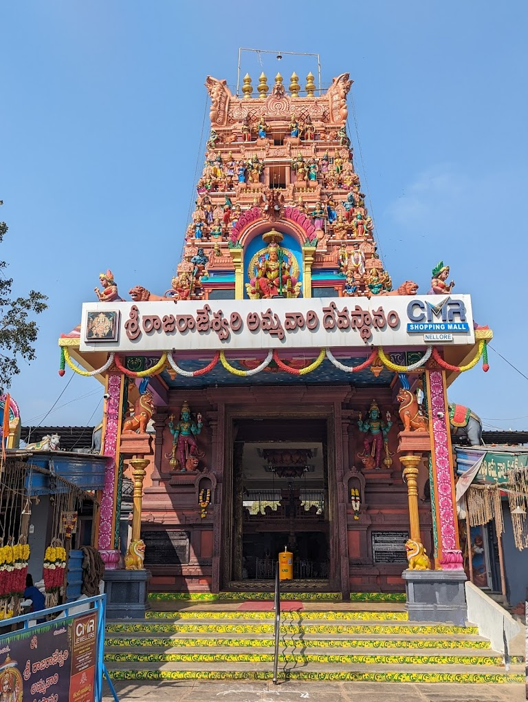

Sri Raja Rajeswari Ammavari Temple

Temple Name: Sri Raja Rajeswari Ammavari Temple
History: It is believed that Rajarajeswari in this shrine was worshipped by Sage Agasthya and Thirumoolar. The rays from the sun touch the holy feet of the Goddess for six days in the early morning time during the month of Masi or Magha
Maps